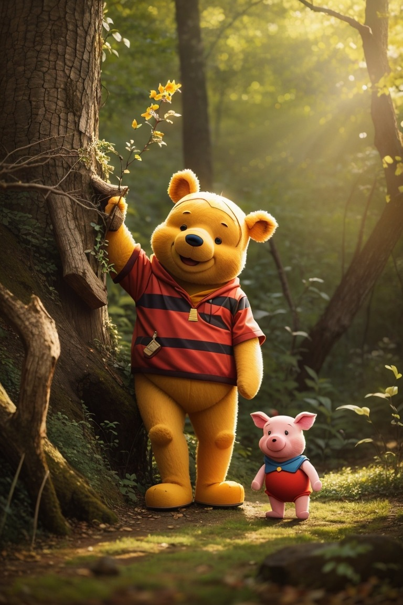

Винни-Пух и все-все-все. Продолжение 2.
Алан Милн
Глава третья, в которой Пух и Пятачок отправились на охоту и чуть-чуть не поймали Буку
Лучший друг Винни-Пуха, крошечный поросенок, которого звали Пятачок, жил в большом-пребольшом доме, в большом-пребольшом дереве. Дерево стояло в самой середине Леса, дом был в самой середине дерева, а Пятачок жил в самой середине дома. А рядом с домом стоял столбик, на котором была прибита поломанная доска с надписью, и тот, кто умел немножко читать, мог прочесть:
Посторонним В.
Больше никто ничего не мог прочесть, даже тот, кто умел читать совсем хорошо.
Как-то Кристофер Робин спросил у Пятачка, что тут, на доске, написано. Пятачок сразу же сказал, что тут написано имя его дедушки и что эта доска с надписью - их фамильная реликвия, то есть семейная драгоценность.
Кристофер Робин сказал, что не может быть такого имени - Посторонним В., а Пятачок ответил, что нет, может, нет, может, потому что дедушку же так звали! И "В" - это просто сокращение, а полностью дедушку звали Посторонним Вилли, а это тоже сокращение имени Вильям Посторонним.
- У дедушки было два имени, - пояснил он, - специально на тот случай, если он одно где-нибудь потеряет.
- Подумаешь! У меня тоже два имени, - сказал Кристофер Робин.
- Ну вот, что я говорил! - сказал Пятачок. - Значит, я прав!
Был чудесный зимний день. Пятачок, разметавший снег у дверей своего дома, поднял голову и увидел не кого иного, как Винни-Пуха. Пух медленно шел куда-то, внимательно глядя себе под ноги, и так глубоко задумался, что, когда Пятачок окликнул его, он и не подумал остановиться.
- Эй, Пух! - закричал Пятачок. - Здорово, Пух! Ты что там делаешь?
- Охочусь! - сказал Пух.
- Охотишься? На кого?
- Выслеживаю кого-то! - таинственно ответил Пух.
Пятачок подошел к нему поближе:
- Выслеживаешь? Кого?
- Вот как раз об этом я все время сам себя спрашиваю, - сказал Пух. - В этом весь вопрос: кто это?
- А как ты думаешь, что ты ответишь на этот вопрос?
- Придется подождать, пока я с ним встречусь, - сказал Винни-Пух. - Погляди-ка сюда. - Он показал на снег прямо перед собой. - Что ты тут видишь?
- Следы, - сказал Пятачок. - Отпечатки лап! - Пятачок даже взвизгнул от волнения. - Ой, Пух! Ты думаешь... это... это... страшный Бука?!
- Может быть, - сказал Пух. - Иногда как будто он, а иногда как будто и не он. По следам разве угадаешь?
Он замолчал и решительно зашагал вперед по следу, а Пятачок, помедлив минутку-другую, побежал за ним.
Внезапно Винни-Пух остановился и нагнулся к земле.
- В чем дело? - спросил Пятачок.
- Очень странная вещь, - сказал медвежонок. - Теперь тут, кажется, стало два зверя. Вот к этому - Неизвестно Кому - подошел другой - Неизвестно Кто, и они теперь гуляют вдвоем. Знаешь чего, Пятачок? Может быть, ты пойдешь со мной, а то вдруг это окажутся Злые Звери?
Пятачок мужественно почесал за ухом и сказал, что до пятницы он совершенно свободен и с большим удовольствием пойдет с Пухом, в особенности если там Настоящий Бука.
- Ты хочешь сказать, если там два Настоящих Буки, - уточнил Винни-Пух, а Пятачок сказал, что это все равно, ведь до пятницы ему совершенно нечего делать.
И они пошли дальше вместе.
Следы шли вокруг маленькой ольховой рощицы... и, значит, два Буки, если это были они, тоже шли вокруг рощицы, и, понятно, Пух и Пятачок тоже пошли вокруг рощицы.
По пути Пятачок рассказывал Винни-Пуху интересные истории из жизни своего дедушки Посторонним В. Например, как этот дедушка лечился от ревматизма после охоты и как он на склоне лет начал страдать одышкой, и всякие другие занятные вещи.
А Пух все думал, как же этот дедушка выглядит. И ему пришло в голову, что вдруг они сейчас охотятся как раз на двух дедушек, и интересно, если они поймают этих дедушек, можно ли будет взять хоть одного домой и держать его у себя, и что, интересно, скажет по этому поводу Кристофер Робин.
А следы все шли и шли перед ними...
Вдруг Винни-Пух снова остановился как вкопанный.
- Смотри! - закричал он шепотом и показал на снег.
- Куда? - тоже шепотом закричал Пятачок и подскочил от страха. Но, чтобы показать, что он подскочил не от страха, а просто так, он тут же подпрыгнул еще разика два, как будто ему просто захотелось попрыгать.
- Следы, - сказал Пух. - Появился третий зверь!
- Пух, - взвизгнул Пятачок, - ты думаешь, это еще один Бука?
- Нет, не думаю, - сказал Пух, - потому что следы совсем другие... Это, может быть, два Буки, а один, скажем... скажем, Бяка... Или же, наоборот, два Бяки, а один, скажем... скажем, Бука... Надо идти за ними, ничего не поделаешь.
И они пошли дальше, начиная немного волноваться, потому что ведь эти три неизвестных зверя могли оказаться очень страшными зверями. И Пятачку ужасно хотелось, чтобы его милый Дедушка Посторонним В. был бы сейчас тут, а не где-то в неизвестном месте... А Пух думал о том, как было бы хорошо, если бы они вдруг, совсем-совсем случайно, встретили Кристофера Робина, - конечно, просто потому, что он, Пух, так любит Кристофера Робина!
И тут совершенно неожиданно Пух остановился в третий раз и облизал кончик своего носа, потому что ему вдруг стало страшно жарко. Перед ними были следы четырех зверей!
- Гляди, гляди, Пятачок! Видишь? Стало три Буки и один Бяка! Еще один Бука прибавился!
Да, по-видимому, так и было! Следы, правда, немного путались и перекрещивались друг с другом, но, совершенно несомненно, это были следы четырех комплектов лап.
- Знаешь что? - сказал Пятачок, в свою очередь, облизав кончик носа и убедившись, что это очень мало помогает. - Знаешь что? По-моему, я что-то вспомнил. Да, да! Я вспомнил об одном деле, которое я забыл сделать вчера, а завтра уже не успею... В общем, мне нужно скорее пойти домой и сделать это дело.
- Давай сделаем это после обеда, - сказал Пух, - я тебе помогу.
- Да, понимаешь, это не такое дело, которое можно сделать после обеда, - поскорее сказал Пятачок. - Это такое специальное утреннее дело. Его обязательно надо сделать утром, лучше всего часов в... Который час, ты говорил?
- Часов двенадцать, - сказал Пух, посмотрев на солнце.
- Вот, вот, как ты сам сказал, часов в двенадцать. Точнее, от двенадцати до пяти минут первого! Так что ты уж на меня не обижайся, а я... Ой, мама! Кто там?
Пух посмотрел на небо, а потом, снова услышав чей-то свист, взглянул на большой дуб и увидел кого-то на ветке.
- Да это же Кристофер Робин! - сказал он.
- А-а, ну тогда все в порядке, - сказал Пятачок, - с ним тебя никто не тронет. До свиданья!
И он побежал домой что было духу, ужасно довольный тем, что скоро окажется в полной безопасности.
Кристофер Робин не спеша слез с дерева.
- Глупенький мой мишка, - сказал он, - чем это ты там занимался? Я смотрю, сначала ты один обошел два раза вокруг этой рощицы, потом Пятачок побежал за тобой, и вы стали ходить вдвоем... Сейчас, по-моему, вы собирались обойти ее в четвертый раз по своим собственным следам!
- Минутку, - сказал Пух, подняв лапу.
Он присел на корточки и задумался - глубоко-глубоко. Потом он приложил свою лапу к одному следу... Потом он два раза почесал за ухом и поднялся.
- Н-да... - сказал он. - Теперь я понял, - добавил он. - Я даже не знал, что я такой глупый простофиля! - сказал Винни-Пух. - Я самый бестолковый медвежонок на свете!
- Что ты! Ты самый лучший медвежонок на свете! - утешил его Кристофер Робин.
- Правда? - спросил Пух. Он заметно утешился. И вдруг он совсем просиял: - Что ни говори, а уже пора обедать, - сказал он. И он пошел домой обедать.
Глава четвертая, в которой Иа-Иа теряет хвост, а Пух находит
Старый серый ослик Иа-Иа стоял один-одинешенек в заросшем чертополохом уголке леса, широко расставив передние ноги и свесив голову набок, и думал о Серьезных Вещах. Иногда он грустно думал: "Почему?", а иногда: "По какой причине?", а иногда он думал даже так: "Какой же отсюда следует вывод?" И неудивительно, что порой он вообще переставал понимать, о чем же он, собственно, думает.
Поэтому, сказать вам по правде, услышав тяжелые шаги Винни-Пуха, Иа очень обрадовался, что может на минутку перестать думать и просто поздороваться.
- Как самочувствие? - по обыкновению уныло спросил он.
- А как твое? - спросил Винни-Пух.
Иа покачал головой.
- Не очень как! - сказал он. - Или даже совсем никак. Мне кажется, я уже очень давно не чувствовал себя как.
- Ай-ай-ай, - сказал Пух, - очень грустно! Дай-ка я на тебя посмотрю.
Иа-Иа продолжал стоять, понуро глядя в землю, и Винни-Пух обошел вокруг него.
- Ой, что это случилось с твоим хвостом? - спросил он удивленно.
- А что с ним случилось? - сказал Иа-Иа.
- Его нет!
- Ты не ошибся?
- Хвост или есть, или его нет. По-моему, тут нельзя ошибиться. А твоего хвоста нет.
- А что же тогда там есть?
- Ничего.
- Ну-ка, посмотрим, - сказал Иа-Иа.
И он медленно повернулся к тому месту, где недавно был его хвост; затем, заметив, что ему никак не удается его догнать, он стал поворачиваться в обратную сторону, пока не вернулся туда, откуда начал, а тогда он опустил голову и посмотрел снизу и наконец сказал, глубоко и печально вздыхая:
- Кажется, ты прав.
- Конечно, я прав, - сказал Пух.
- Это вполне естественно, - грустно сказал Иа-Иа. - Теперь все понятно. Удивляться не приходится.
- Ты, наверно, его где-нибудь позабыл, - сказал Винни-Пух.
- Наверно, его кто-нибудь утащил... - сказал Иа-Иа. - Чего от них ждать! - добавил он после большой паузы.
Пух чувствовал, что он должен сказать что-нибудь полезное, но не мог придумать, что именно. И он решил вместо этого сделать что-нибудь полезное.
- Иа-Иа, - торжественно произнес он, - я, Винни-Пух, обещаю тебе найти твой хвост.
- Спасибо, Пух, - сказал Иа. - Ты настоящий друг. Не то что некоторые!
И Винни-Пух отправился на поиски хвоста.
Он вышел в путь чудесным весенним утром. Маленькие прозрачные облачка весело играли на синем небе. Они-то набегали на солнышко, словно хотели его закрыть, то поскорее убегали, чтобы дать и другим побаловаться.
А солнце весело светило, не обращая на них никакого внимания, и сосна, которая носила свои иголки круглый год не снимая, казалась старой и потрепанной рядом с березками, надевшими новые зеленые кружева. Винни шагал мимо сосен и елок, шагал по склонам, заросшим можжевельником и репейником, шагал по крутым берегам ручьев и речек, шагал среди груд камней и снова среди зарослей, и вот наконец, усталый и голодный, он вошел в Дремучий Лес, потому что именно там, в Дремучем Лесу, жила Сова.
"А если кто-нибудь что-нибудь о чем-нибудь знает, - сказал медвежонок про себя, - то это, конечно, Сова. Или я не Винни-Пух, - сказал он. - А я - он, - добавил Винни-Пух. - Значит, все в порядке! "
Сова жила в великолепном замке "Каштаны". Да, это был не дом, а настоящий замок. Во всяком случае, так казалось медвежонку, потому что на двери замка был и звонок с кнопкой, и колокольчик со шнурком. Под звонком было прибито объявление:
ПРОШУ НАЖАТЬ ЭСЛИ НЕ АТКРЫВАЮТ
А под колокольчиком другое объявление:
ПРОШУ ПАДЕРГАТЬ ЭСЛИ НЕ АТКРЫВАЮТ
Оба эти объявления написал Кристофер Робин, который один во всем Лесу умел писать. Даже Сова, хотя она была очень-очень умная и умела читать и даже подписывать свое имя - Сава, и то не сумела бы правильно написать такие трудные слова.
Винни-Пух внимательно прочел оба объявления, сначала слева направо, а потом - на тот случай, если он что-нибудь пропустил, - справа налево.
Потом, для верности, он нажал кнопку звонка и постучал по ней, а потом он подергал шнурок колокольчика и крикнул очень громким голосом:
- Сова! Открывай! Пришел Медведь.
Дверь открылась, и Сова выглянула наружу.
- Здравствуй, Пух, - сказала она. - Какие новости?
- Грустные и ужасные, - сказал Пух, - потому что Иа-Иа, мой старый друг, потерял свой хвост, и он очень убивается о нем. Будь так добра, скажи мне, пожалуйста, как мне его найти?
- Ну, - сказала Сова, - обычная процедура в таких случаях нижеследующая...
- Что значит Бычья Цедура? - сказал Пух. - Ты не забывай, что у меня в голове опилки и длинные слова меня только огорчают.
- Ну, это означает то, что надо сделать.
- Пока она означает это, я не возражаю, - смиренно сказал Пух.
- А сделать нужно следующее: во-первых, сообщи в прессу. Потом...
- Будь здорова, - сказал Пух, подняв лапу. - Так что мы должны сделать с этой... как ты сказала? Ты чихнула, когда собиралась сказать.
- Я не чихала.
- Нет, Сова, ты чихнула.
- Прости, пожалуйста, Пух, но я не чихала. Нельзя же чихнуть и не знать, что ты чихнул.
- Ну и нельзя знать, что кто-то чихнул, когда никто не чихал.
- Я начала говорить: сперва сообщи...
- Ну вот ты опять! Будь здорова, - грустно сказал Винни-Пух.
- Сообщи в печать, - очень громко и внятно сказала Сова. - Дай в газету объявление и пообещай награду. Надо написать, что мы дадим что-нибудь хорошенькое тому, кто найдет хвост Иа-Иа.
- Понятно, понятно, - сказал Пух, кивая головой. - Кстати, насчет "чего-нибудь хорошенького", - продолжал он сонно, - я обычно как раз в это время не прочь бы чем-нибудь хорошенько подкре... - И он покосился на буфет, стоявший в углу комнаты Совы. - Скажем, ложечкой сгущенного молока или еще чем-нибудь, например, одним глоточком меду...
- Ну вот, - сказала Сова, - мы, значит, напишем наше объявление, и его расклеят по всему Лесу.
"Ложечка меду, - пробормотал медвежонок про себя, - или... или уж нет, на худой конец".
И он глубоко вздохнул и стал очень стараться слушать то, что говорила Сова.
А Сова говорила и говорила какие-то ужасно длинные слова, и слова эти становились все длиннее и длиннее... Наконец она вернулась туда, откуда начала, и стала объяснять, что написать это объявление должен Кристофер Робин.
- Это ведь он написал объявления на моей двери. Ты их видел, Пух?
Пух уже довольно давно говорил по очереди то "да", то "нет" на все, что бы ни сказала Сова. И так как в последний раз он говорил "да, да", то на этот раз он сказал: "Нет, нет, никогда!" - хотя не имел никакого понятия, о чем идет речь.
- Как, ты их не видел? - спросила Сова, явно удивившись. - Пойдем посмотрим на них.
Они вышли наружу, и Пух посмотрел на звонок и на объявление под ним и взглянул на колокольчик и шнурок, который шел от него, и чем больше он смотрел на шнурок колокольчика, тем больше он чувствовал, что он где-то видел что-то очень похожее... Где-то совсем в другом месте, когда-то раньше...
- Красивый шнурок, правда? - сказала Сова.
Пух кивнул.
- Он мне что-то напоминает, - сказал он, - но я не могу вспомнить что. Где ты его взяла?
- Я как-то шла по лесу, а он висел на кустике, и я сперва подумала, что там кто-нибудь живет, и позвонила, и ничего не случилось, а потом я позвонила очень громко, и он оторвался, и, так как он, по-моему, был никому не нужен, я взяла его домой и...
- Сова, - сказал Пух торжественно, - он кому-то очень нужен.
- Кому?
- Иа. Моему дорогому другу Иа-Иа. Он... он очень любил его.
- Любил его?
- Был привязан к нему, - грустно сказал Винни-Пух.
С этими словами он снял шнурок с крючка и отнес его хозяину, то есть Иа, а когда Кристофер Робин прибил хвост на место, Иа-Иа принялся носиться по Лесу, с таким восторгом размахивая хвостом, что у Винни-Пуха защекотало во всем теле и ему пришлось поскорее побежать домой и немножко подкрепиться.
Спустя полчаса, утирая губы, он гордо спел:
Кто нашел хвост?
Я, Винни-Пух!
Около двух
(Только по-правдашнему было около одиннадцати!)
Я нашел хвост!
Продолжение следует